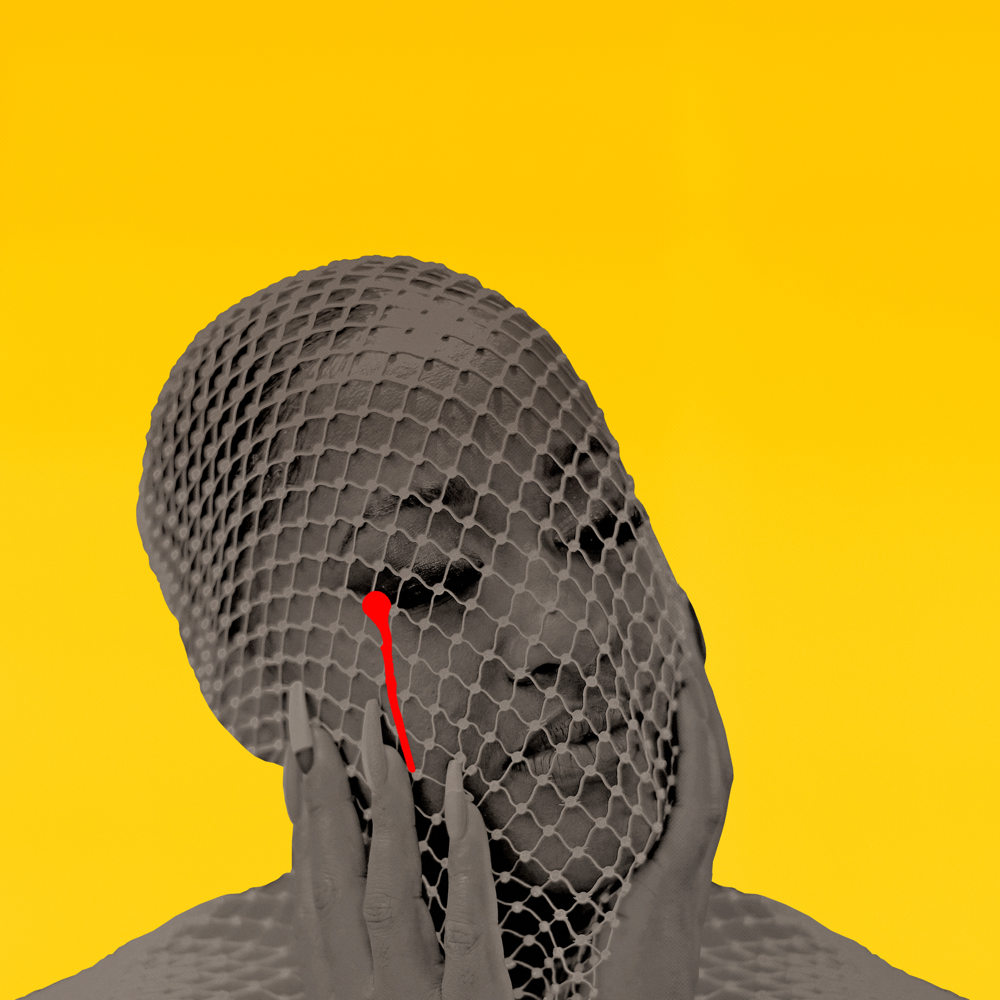
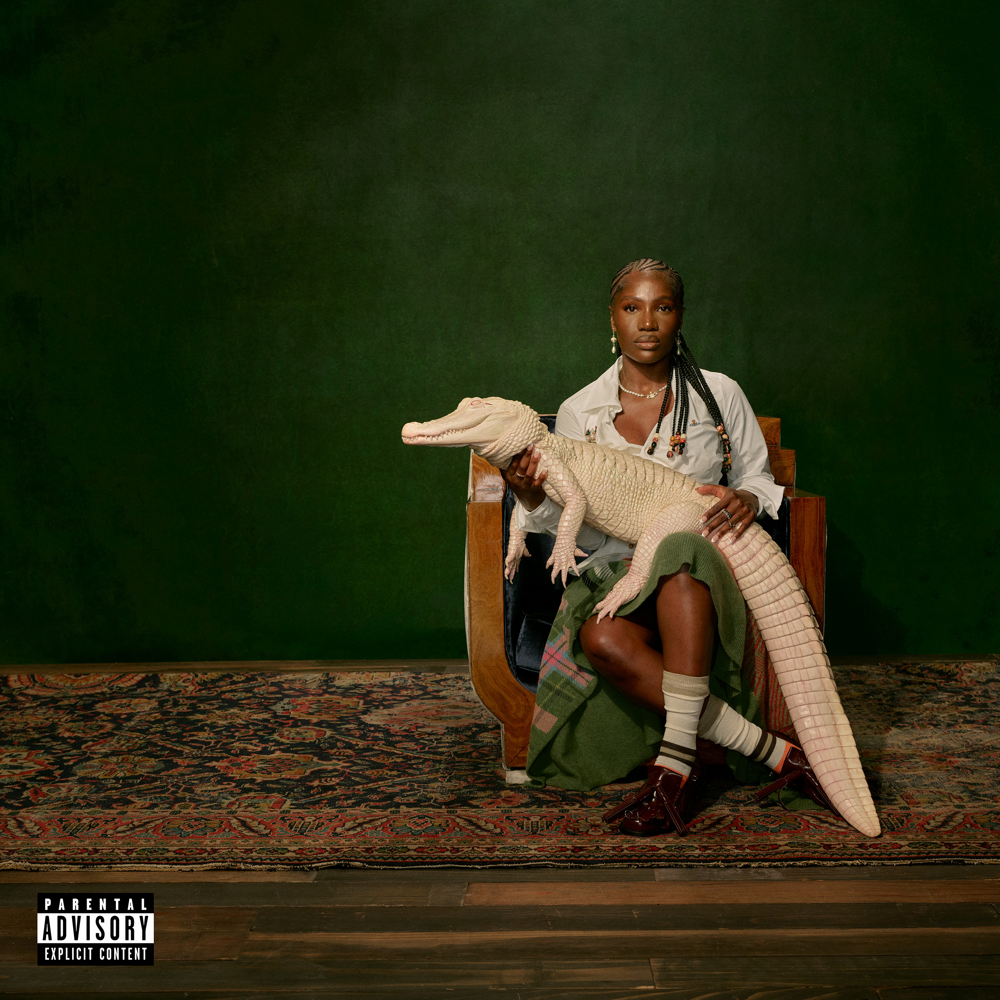
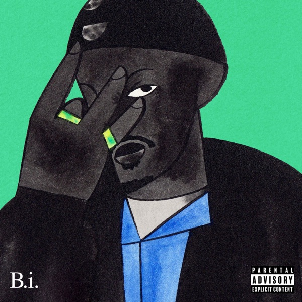
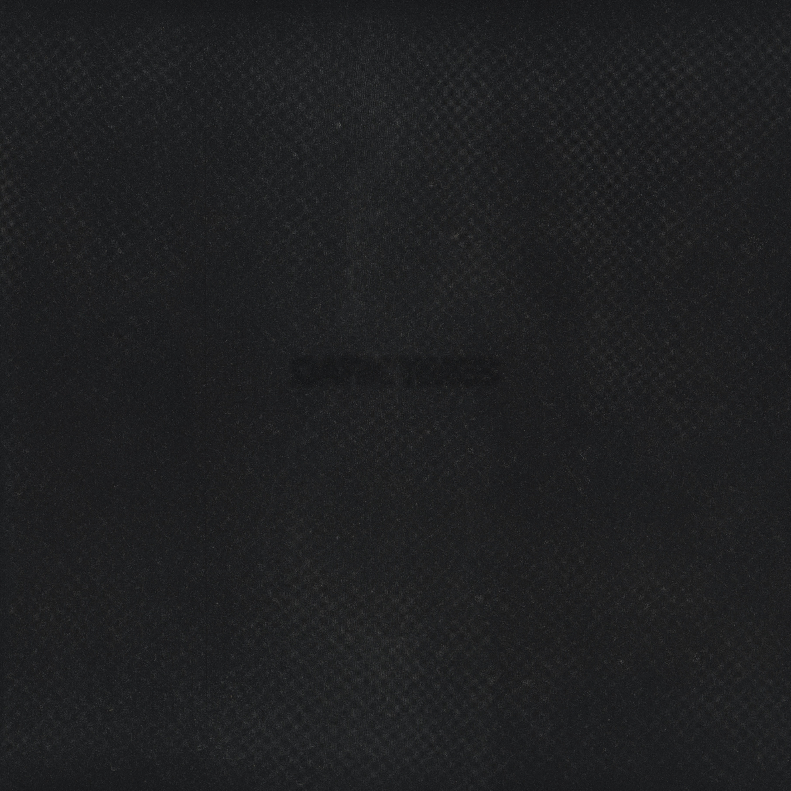
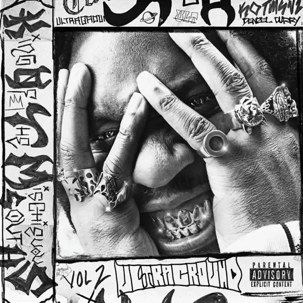
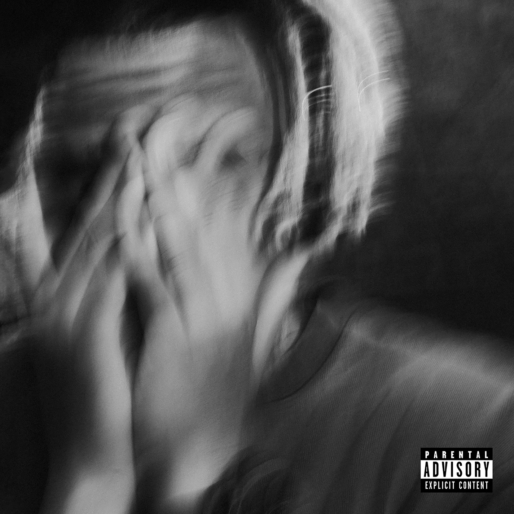
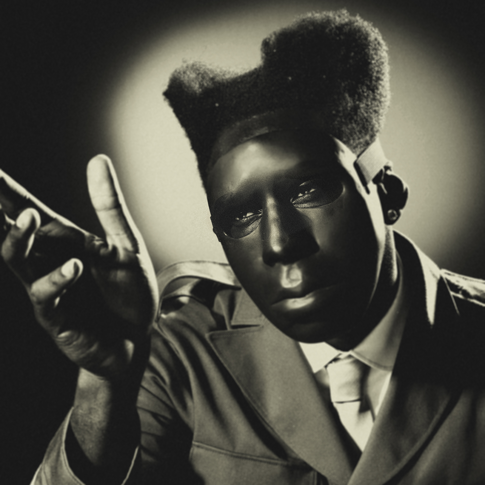
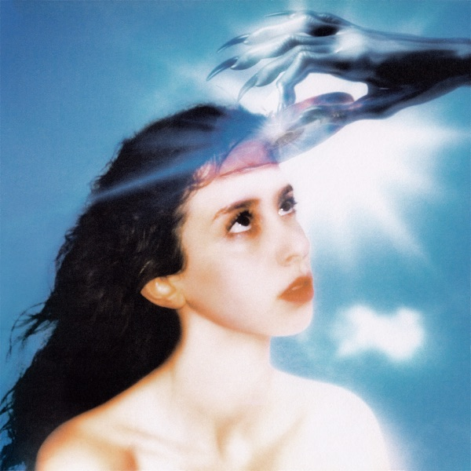

2024 has been a very exciting year in music, and I have decided to put together my top ten
list! You can click each number and it will reveal the album (or you can reveal if you aren't into that).
Each one has a little bit about why I like it, and then the tracklist with my ranking of each song. I am no
graphic designer, but I am hoping that I can improve this website each year going forward!

Please Don't Cry
Rapsody
Rapsody is very introspective on this album, with some great production as well.
Specifically, 'Asteroids' and '3 A.M.' sound great.
Short n' Sweet
Sabrina Carpenter
Sabrina has had a great year. I could not get 'Please Please
Please' and 'Espresso' out of my head all year.
NO HANDS
Joey Valence & Brae
NO HANDS is very reminicient of the Beastie Boys, in all the best ways.
From the funrock/rap production, to the fun bars and lyricism, it is a great listen all the way
through.

Alligator Bites Never Heal
Doechii
While I was not initally a fan, Alligator Bites Never Heal has grown on
me throughout the year. Doechii has a very ambitious sound, and I am very excited to see what
she does next.

BRAVADO + INTiMO
IDK
I found this album super late in the year (actually after I had already made this website)
but I am enjoying it heavily. It is a very interesting concept album, exploring the line between
showing bravado and showing your actual feelings.
10

Dark Times
Vince Staples
Vince Staples has a way of creating the perfect chorus that will always get stuck
in your head and keep you coming back on Dark Times. The production is exciting when it
needs to be, contrasting Vince's fairly monotone delivery, leading to an amazing final product.
‘Black&Blue’ is a perfect example of this, with a very busy production, Vince doesn't overdo his
delivery, which could have led to an overly busy song. Additionally, 'Justin' lets Staples show
off his storytelling skills, although I wish it has been longer. Finally, ‘"Radio"’ somehow
gives me nostalgia for times that I haven't experienced in full, before streaming services took
over as the preferred way to listen to music. While the convenience is unmatched, there is
something unifying about listening to the radio and knowing everyone else is listening to the
same thing at the same time.
1. Close Your Eyes and Swing
2. Black&Blue
3. Government Cheese
4. Children's Song
5. Shame On The Devil
6. Étoufée
7. Liars
8. Justin
9. "Radio"
10. Nothing Matters
11. Little Homies
12. Freeman
13. Why Won't the Sun Come Out?
Ranking:
Best
Perfect
Amazing
Good
Okay
Bad
Interlude
9
Blue Lips
ScHoolboy Q
I used to think that Kendrick Lamar was the only rapper I trusted to make a good beat switch,
but ScHoolboy Q has changed my mind, almost to an excessive degree. Many of the songs on
Blue Lips start with roughly 30 seconds of a different beat, and then switch into
something new, and while it is very fun for a while, sometimes it gets to be too much. However,
this album is very consistent throughout, the jazz and soul influences are all over the album
and are executed amazingly. 'Pop' is a stand out song to me, the grimy beat matches the angry
sounding ScHoolboy Q and Rico Nasty extremely well. This was also my first exposure to AzChike
on 'Movie', who I will be looking forward to hearing more from, especially after his feature on
Kendrick Lamar's GNX.
1. Funny Guy
2. Pop (feat. Rico Nasty)
3. THank god 4 me
4. Blueslides
5. Yeern 101
6. Love Birds (feat. Devin Malik & Lance Skiiiwalker)
7. Movie (feat. AzChike)
8. Cooties
9. oHio (feat. Freddie Gibbs)
10. Foux (feat. Ab-Soul)
11. First
12. Nunu
13. Back n Love (feat. Devin Malik)
14. Lost Times (feat. Jozzy)
15. Germany 86'
16. Time killers
17. Pig feet (feat. Childish Major)
18. Smile
Ranking:
Best
Perfect
Amazing
Good
Okay
Bad
Interlude
8

King Of The Mischievous South Vol. 2
Denzel Curry
When I think of a true southern rap album, King Of The Mischievous South Vol. 2 is what
I think of. This album (which feels more like a mixtape) has heavy beats and hard-hitting bars
and show off lots of talent from the south. 'BLACK FLAG FREESTYLE' has phenomenal bars along
with a simple but amazing beat. While I tend to think the album has too many interludes that
tend to break up the energy, every song on this album has at least one part that I always want
to come back to, from the smooth chorus of 'COLE PIMP' to the hardcore high-energy 'SKED'.
While it's a bit bittersweet, Bando Stone and The New World is an amazing album to send
off the Childish Gambino persona. You can tell that Gambino is experimenting with lots of
different sounds, and he is able to pull it off perfectly. The snippets of dialogue create an
atmosphere where you can imagine how each song will be used in the movie. Songs like 'Lithonia'
and 'Real Love' show off his singing voice, while 'Talk My Shit' and 'Yoshinoya' allow him to
craft bars like he did on Because The Internet and Camp. I love how much he
talks about being a father on songs like 'Dadvocate' and even singing with his son on 'Can You
Feel Me'. It is a bit sad to see Childish Gambino go, I am sure Donald Glover is not done with
music, and I am excited to see the Bando Stone movie this summer.
1. H3@RT$ W3RE M3@NT T0 F7¥
2. Lithonia
3. Survive (feat. Chloë)
4. Steps Beach
5. Talk My Shit (feat. Amaarae & Flo Milli)
6. Got To Be
7. Real Love
8. In The Night (feat. Jorja Smith & Amaarae)
9. Yoshinoya
10. Can You Feel Me (feat. Legend)
11. No Excuses (feat. Ludwig Göransson & Kamasi Washington)
12. Cruisin' (feat. Yeat)
13. We Are God
14. Running Around (feat. Fousheé)
15. Dadvocate
16. Happy Survival (feat. Khruangbin)
17. A Place Where Love Goes
Ranking:
Best
Perfect
Amazing
Good
Okay
Bad
Interlude
6

The Crossroads
Cordae
I wish Cordae had gotten more love for this album when it came out, but I think The
Crossroads got overshadowed by Kendrick Lamar's GNX when it came out a week
after. Cordae talks a lot about his family, like on '06 dreamin', where Cordae recounts his
mother's attempts to become a big artist when he was a kid, and being supportive of her all the
way through. In fact, Cordae sampled a song made by his mom in the beat of this song, which is
an amazing full circle moment. He also talks about how happy he is to be a father on ‘Shai
Afeni’ and about missing his late grandmother on ‘Now You Know’. Although throughout the album,
he doesn’t hesitate to flex like on ‘Never See It’ and ‘Mad As F*ck’. He talks about the
struggle of keeping family at the top priority while having strong ambitions for music on ‘What
Really Matters’, and being scared to lose the things he worked for on ‘Nothings Promised’.
However, Cordae is able to keep it light on songs like ‘Saturday Mornings’, ‘No Bad News’ and
‘Two Tens’ which are fun songs. Overall, I love the sped up soul samples and smooth 808s, which
are very reminiscent of The College Dropout era Kanye, which makes this album a very
fun listen.
1. Intro
2. 06 dreamin
3. Back on the Road (feat. Lil Wayne)
4. Summer Drop (feat. Anderson .Paak)
5. Nothings Promised
6. Mad As F*ck
7. All Alone
8. Never See It (feat. Juicy J)
9. Pray (feat. Ty Dolla $ign)
10. Don't Walk Away (feat. Jordan Ward & Ravyn Lenae)
11. Saturday Mornings (feat. Lil Wayne)
12. No Bad News (feat. Kanye West)
13. Shai Afeni
14. What Really Matters
15. Syrup Sandwiches (feat. Joey Bada$$)
16. Now You Know
17. Two Tens (feat. Anderson .Paak) - Bonus Track
Ranking:
Best
Perfect
Amazing
Good
Okay
Bad
Interlude
5
BRAT
Charli xcx
BRAT has been such a huge phenomenon this year, and I am so happy to see Charli xcx
getting her flowers. This album is equal parts fist pumping in the club and deeply personal.
Songs like ‘Club classics’ and ‘Von dutch’ say “I am a bad bitch”, ‘Talk talk’ is a love song
about just wanting to talk to someone and ‘I think about it all the time’ is about balancing
your career against the desire to have a child. The range of the songs on this album is truly
amazing, but it never feels like it is too much. Even the harsher transitions between songs feel
somewhat intentional, like suddenly getting hit by a bucket of cold water. This
album was all I listened to over the summer and I don’t regret it at all.
1. 360
2. Club classics
3. Sympathy is a knife
4. I might say something stupid
5. Talk talk
6. Von dutch
7. Everything is romantic
8. Rewind
9. So I
10. Girl, so confusing
11. Apple
12. B2b
13. Mean girls
14. I think about it all the time
15. 365
Ranking:
Best
Perfect
Amazing
Good
Okay
Bad
Interlude
4

CHROMAKOPIA
Tyler, The Creator
Tyler, The Creator continues to be one of my favorite artists of all time. This is one of
Tyler’s most eccentric projects yet, and you can tell that he is playing around with lots of
different sounds and topics. From the solid bars on rap songs like ‘Sticky’ and ‘You Thought I
Was Dead’ to the more groovy songs like ‘Darling, I’ and ‘Judge Judy’ he walks away with W after
W on this album. On top of this, he tackles topics like abortion, his father leaving, paranoia
from being famous and feeling behind on relationships and family because of his career. Tyler
continues to build a more and more diverse discography and I love it.
1. St. Chroma (feat. Daniel Caesar)
2. Rah Tah Tah
3. Noid
4. Darling, I (feat. Teezo Touchdown)
5. Hey Jane
6. I Killed You
7. Judge Judy
8. Sticky (feat. GloRilla, Sexyy Red & Lil Wayne)
9. Take Your Mask Off (feat. Daniel Caesar & LaToiya Williams)
10. Tomorrow
11. Thought I Was Dead (feat. ScHoolboy Q & Santigold)
12. Like Him (feat. Lola Young)
13. Balloon (feat. Doechii)
14. I Hope You Find Your Way Home
Ranking:
Best
Perfect
Amazing
Good
Okay
Bad
Interlude
3

Imaginal Disk
Magdelena Bay
I am so excited that I found Magdelena Bay this year. I love the pop-ish sound of Imaginal
Disk and I have also loved going back into their discography and finding even more
amazing music. Specifically, Mini Mix Vol. 3 is so short and sweet and catchy. Matt and
Mica have such a fun aesthetic, looking at their music videos along with listening to this album
is a must in my eyes. They captured the early internet vibe so perfectly, and it is so
refreshing to see this in the pop space, which has felt fairly monotonous in recent years. This
album takes you on a trip through the stars and it is a fun trip all the way down.
1. She Looked Like Me!
2. Killing Time
3. True Blue Interlude
4. Image
5. Death & Romance
6. Fear, Sex
7. Vampire in the Corner
8. Watching T.V.
9. Tunnel Vision
10. Love Is Everywhere
11. Feeling DisknIserted?
12. That's My Floor
13. Cry For Me
14. Angel on a Satellite
15. The Ballad of Matt & Mica
Ranking:
Best
Perfect
Amazing
Good
Okay
Bad
Interlude
2
GNX
Kendrick Lamar
As a Kendrick Lamar fan and a Drake hater, this year has been a phenomenal year. And
GNX is the perfect capstone on an already great year. While it is likely his least
conceptual album to date, Kendrick Lamar delivers on all fronts. Kendrick knows that he could
have delivered a whole album of ‘Not Like Us’ and it would have gone mega platinum, but he
decided that he would go a different direction in many places (while still delivering ‘Not Like
Us’ level bangers). Drake simply could never. ‘luther’ has Kendrick singing with SZA,
‘reincarnated’ brings me back to the days of ‘Sing About Me’ on good kid, m.A.A.d. city
and ‘gloria’ is such a fun song when you listen through a second time, realizing that his
“bitch” is literally his pen. Kendrick Lamar fans are truly feasting this year, and I will
certainly be going in for seconds.
1. wacced out murals
2. squabble up
3. luther (with sza)
4. man at the garden
5. hey now (feat. dody6)
6. reincarnated
7. tv off (feat. lefty gunplay)
8. dodger blue (feat. wallie the sensei, siete7x, roddy ricch)
9. peekaboo (feat. azchike)
10. heart pt. 6
11. gnx (feat. hitta j3, youngthreat, peysoh)
12. gloria (with sza)
Ranking:
Best
Perfect
Amazing
Good
Okay
Bad
Interlude
1
I LAY DOWN MY LIFE FOR YOU
JPEGMAFIA
While I have not been as big of a fan of some of JPEGMAFIA’s older stuff, he was absolutely
cooking on I LAY DOWN MY LIFE FOR YOU. While Peggy is not for everyone, I think he is
one of the most creative producers out there. He has so many deep cuts for samples - sampling
the show Succession on ‘don’t rely on other men’ and sampling an AI jazz cover of
Future’s ‘Turn On The Lights’ on ‘either on or off the drugs’. And it works so well! JPEGMAFIA
spans many topics, but all of it feels very personal, talking about past relationships on ‘i
recovered from this’ and disavowing the military industrial complex on ‘Exmilitary’, even though
he served in the Air Force when he was younger. Overall, I have been playing this album back to
back to back all year so, I think it deserves the number one spot on my list.
1. i scream this in the mirror before i interact with anyone
2. SIN MIEDO
3. I'll Be Right There
4. it's dark and hell is hot
5. New Black History (feat. Vince Staples)
6. don't rely on other men
7. vulgar display of power
8. Exmilitary
9. JIHAD JOE
10. JPEGULTRA! (feat. Denzel Curry)
11. either on or off the drugs
12. loop it and leave it
13. Don't Put Anything On the Bible (feat. Buzzy Lee)